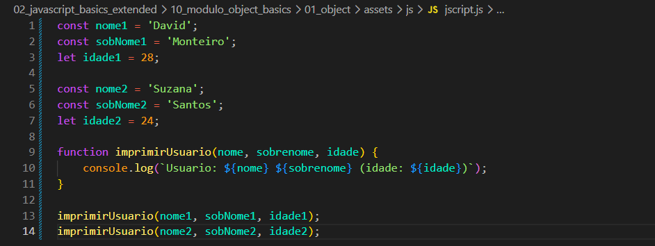
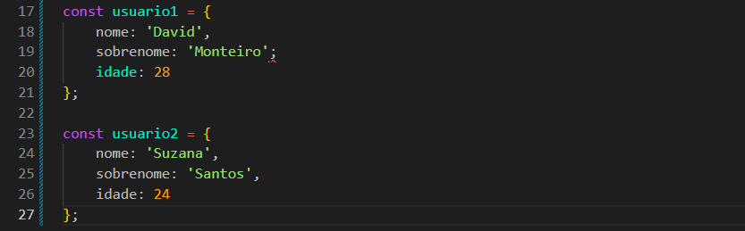
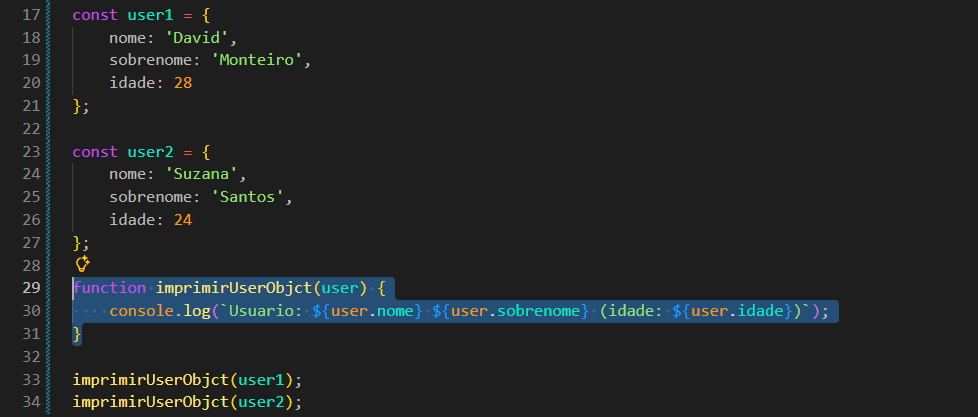

Object
Intro
Para essa aula temos o seguinte codigo de exemplo:
Para essa aula temos o seguinte codigo de exemplo:

Podemos ver nesse nosso exemplo que temos basciamente informacoes de um usuario e nossa funcao, serivindo para imprimir os valores passados. Com isso ainda podemos acabar comendo erros como ao inves de passar nome2 na segunda chamada, pode acabar ocorrendo de chamarmos o nome1 novamente.
Com isso em mente podemos utilizar objetos. Para isso teremos o seguinte codigo de exemplo:

Feito isso fizemos basciamente o mesmo que as variaveis mostradas acima, porem em forma de objeto.
Feito isso, nossa funcao ira precisar de algumas mudancas para poder receber objeto.
Iremos criar uma nova funcao com essa finalidade. Ficando da seguinte forma:

Com isso conseguimos minimizar erros e tambem evitamos ficar de passando diversas variaveis.